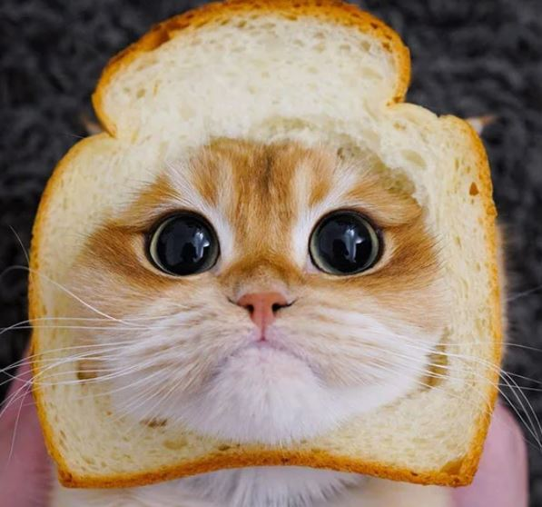
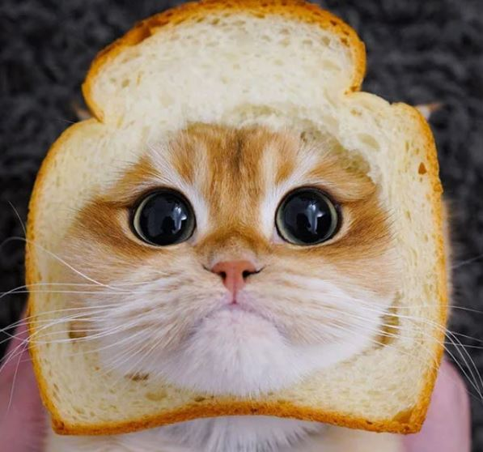

Страница реализована с использованием VS Code. Этот инструмент оказался удивительно дружелюбным "швейцарским ножом".
Это был первый параграф. Для html это не совсем то же самое, к чему мы привыкли в обычном отечественном письме. Здесь он является скорее разделителем текста. Без отступа по умолчанию. Приведу пример: "Я не беру совсем никаких взяток. Вот если бы вы, например, предложили мне взаймы рублей триста — ну, тогда совсем дело другое: взаймы я могу взять." Н. Гоголь. РевизорБез параграфа - такое себе. Ну, речь об оформлении цитаты.

Кроме того, это был нумерованный список.
Ненумерованный список выглядит так: